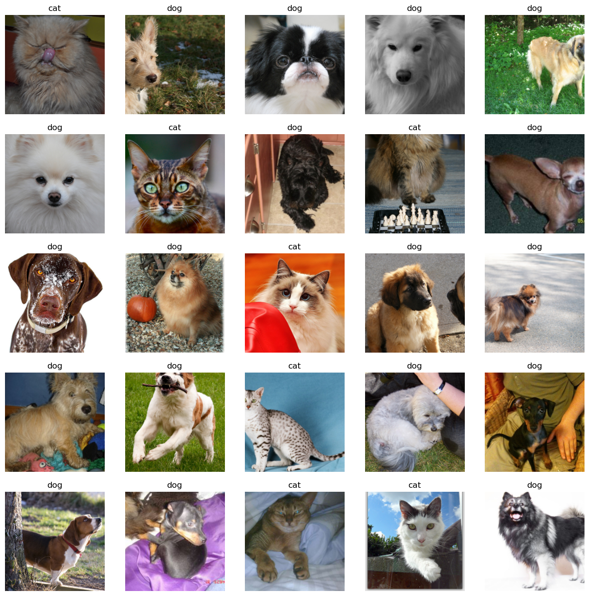
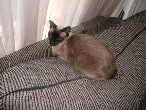
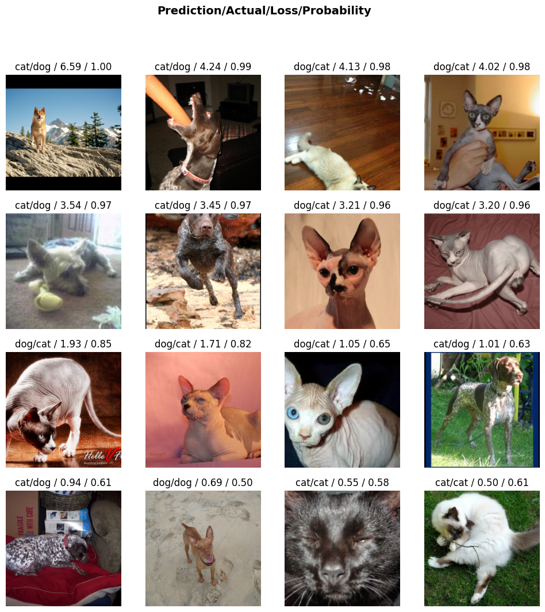
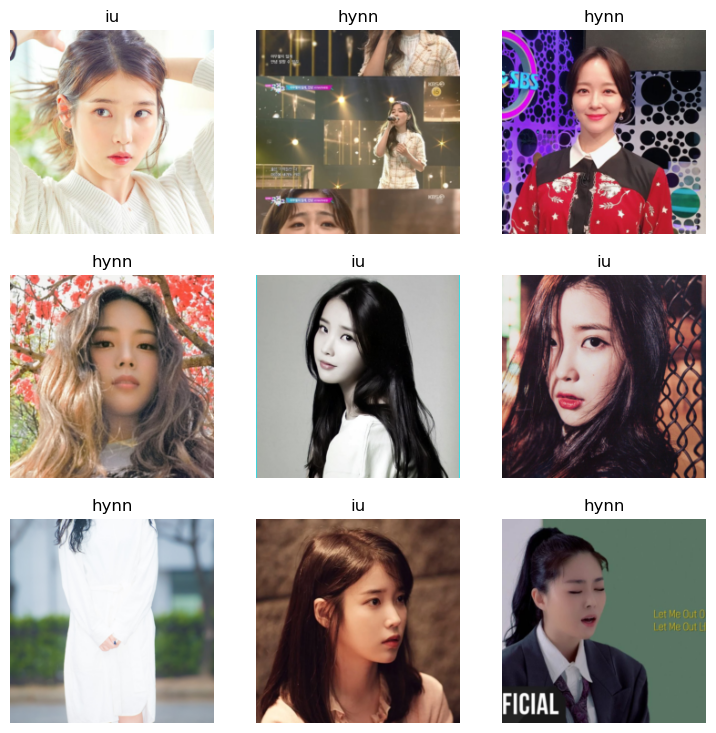
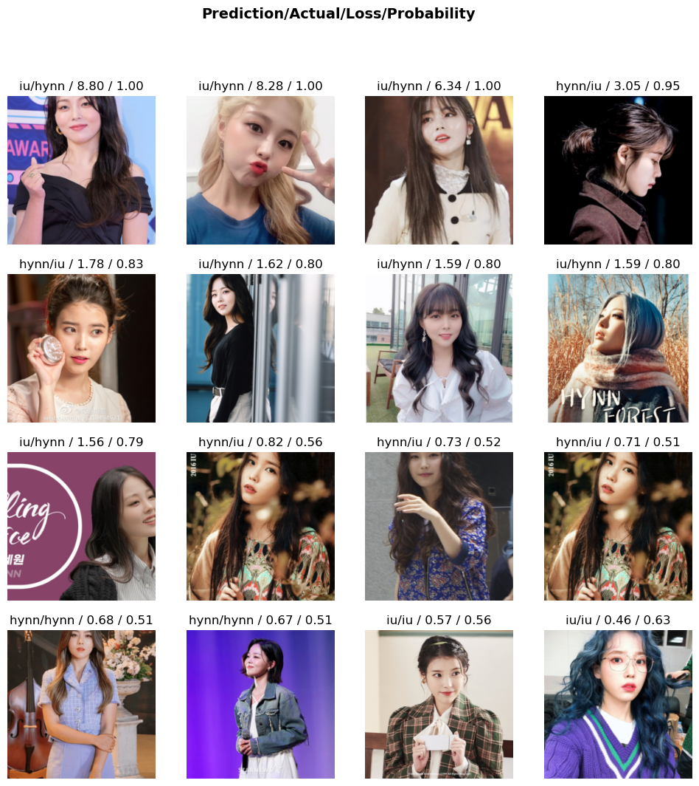

from fastai.vision.all import * 01wk-1: 이미지자료분석

1. 강의영상
2. Imports
3. 데이터
- 다운로드 + 압축풀기
untar_data('https://s3.amazonaws.com/fast-ai-imageclas/oxford-iiit-pet.tgz')Path('/home/cgb3/.fastai/data/oxford-iiit-pet')- 파일탐색
#!ls /home/cgb3/.fastai/data/oxford-iiit-pet/images- Abyssinian_1.jpg 을 보고싶음
PILImage.create('/home/cgb3/.fastai/data/oxford-iiit-pet/images/Abyssinian_1.jpg')
- Abyssinian_100.jpg를 보고싶다면?
PILImage.create('/home/cgb3/.fastai/data/oxford-iiit-pet/images/Abyssinian_100.jpg')
- 그림을 확인 할 수 있는건 좋은데 이렇게 확인하니까 조금 귀찮음..
lst = ['/home/cgb3/.fastai/data/oxford-iiit-pet/images/Abyssinian_1.jpg',
'/home/cgb3/.fastai/data/oxford-iiit-pet/images/Abyssinian_100.jpg']lst[0]'/home/cgb3/.fastai/data/oxford-iiit-pet/images/Abyssinian_1.jpg'PILImage.create(lst[0])
image_paths = get_image_files('/home/cgb3/.fastai/data/oxford-iiit-pet/images')
image_paths[0]Path('/home/cgb3/.fastai/data/oxford-iiit-pet/images/boxer_177.jpg')- 그림살펴보기 + 파일명으로 개/고양이 맞춰보기
print(image_paths[0])
display(PILImage.create(image_paths[0]))/home/cgb3/.fastai/data/oxford-iiit-pet/images/boxer_177.jpg
print(image_paths[2])
display(PILImage.create(image_paths[2]))/home/cgb3/.fastai/data/oxford-iiit-pet/images/keeshond_165.jpg
print(image_paths[3])
display(PILImage.create(image_paths[3]))/home/cgb3/.fastai/data/oxford-iiit-pet/images/samoyed_80.jpg
print(image_paths[4])
display(PILImage.create(image_paths[4]))/home/cgb3/.fastai/data/oxford-iiit-pet/images/Siamese_224.jpg
print(image_paths[5])
display(PILImage.create(image_paths[5]))/home/cgb3/.fastai/data/oxford-iiit-pet/images/miniature_pinscher_59.jpg
print(image_paths[6])
display(PILImage.create(image_paths[6]))/home/cgb3/.fastai/data/oxford-iiit-pet/images/saint_bernard_159.jpg
print(image_paths[7])
display(PILImage.create(image_paths[7]))/home/cgb3/.fastai/data/oxford-iiit-pet/images/american_bulldog_143.jpg
print(image_paths[8])
display(PILImage.create(image_paths[8]))/home/cgb3/.fastai/data/oxford-iiit-pet/images/american_pit_bull_terrier_142.jpg
# 특1: 대문자이면 고양이, 소문자이면 강아지그림이다!! (천재적인 저장방식)
# 특2: 이미지크기가 서로 다르다..def label_func(fname):
if fname[0].isupper():
return 'cat'
else:
return 'dog'image_paths(#7390) [Path('/home/cgb3/.fastai/data/oxford-iiit-pet/images/boxer_177.jpg'),Path('/home/cgb3/.fastai/data/oxford-iiit-pet/images/american_pit_bull_terrier_131.jpg'),Path('/home/cgb3/.fastai/data/oxford-iiit-pet/images/keeshond_165.jpg'),Path('/home/cgb3/.fastai/data/oxford-iiit-pet/images/samoyed_80.jpg'),Path('/home/cgb3/.fastai/data/oxford-iiit-pet/images/Siamese_224.jpg'),Path('/home/cgb3/.fastai/data/oxford-iiit-pet/images/miniature_pinscher_59.jpg'),Path('/home/cgb3/.fastai/data/oxford-iiit-pet/images/saint_bernard_159.jpg'),Path('/home/cgb3/.fastai/data/oxford-iiit-pet/images/american_bulldog_143.jpg'),Path('/home/cgb3/.fastai/data/oxford-iiit-pet/images/american_pit_bull_terrier_142.jpg'),Path('/home/cgb3/.fastai/data/oxford-iiit-pet/images/english_cocker_spaniel_78.jpg')...]dls = ImageDataLoaders.from_name_func(
path ='/home/cgb3/.fastai/data/oxford-iiit-pet/images',
fnames = image_paths,
label_func = label_func,
item_tfms = Resize(224)
)dls.show_batch(max_n=25)
4. 학습
lrnr = vision_learner(
dls = dls,
arch = resnet34,
metrics = accuracy
)lrnr.fine_tune(1) # 학습을 하는 함수| epoch | train_loss | valid_loss | accuracy | time |
|---|---|---|---|---|
| 0 | 0.184491 | 0.015150 | 0.996617 | 00:08 |
| epoch | train_loss | valid_loss | accuracy | time |
|---|---|---|---|---|
| 0 | 0.052401 | 0.014759 | 0.993234 | 00:09 |
5. 기존자료를 잘 맞추는지 확인
img0 = PILImage.create(image_paths[0]) # 강아지
img0
lrnr.predict(img0)
#lrnr.predict(PILImage.create(image_paths[0]))
#lrnr.predict(image_paths[0])('dog', tensor(1), tensor([2.6513e-04, 9.9973e-01]))img4 = PILImage.create(image_paths[4])
img4
lrnr.predict(img4)('cat', tensor(0), tensor([9.9973e-01, 2.7207e-04]))lrnr.show_results()
6. 오답분석
inter = Interpretation.from_learner(lrnr) inter.plot_top_losses(16) # 오답을 분석하는 오브젝트는 가장 오류가 높은 이미지를 정렬하여 보여주는 기능이 있음..
7. 진짜 잘되는게 맞는건가?
import requestshani01 = PILImage.create(requests.get('https://github.com/guebin/DL2024/blob/main/posts/01wk-hani01.jpeg?raw=true').content)lrnr.predict(hani01)('dog', tensor(1), tensor([1.2857e-07, 1.0000e+00]))clsfr.predict('/root/.fastai/data/oxford-iiit-pet/images/Egyptian_Mau_34.jpg')NameError: name 'clsfr' is not definedclsfr.predict(PILImage.create('/root/.fastai/data/oxford-iiit-pet/images/Egyptian_Mau_34.jpg'))PILImage.create('2022-09-06-cat1.png')clsfr.predict(PILImage.create('2022-09-06-cat1.png'))PILImage.create('2022-09-06-cat2.jpeg')clsfr.predict(PILImage.create('2022-09-06-cat2.jpeg'))clsfr.predict(PILImage.create('2022-09-06-hani01.jpeg'))clsfr.predict(PILImage.create('2022-09-06-hani02.jpeg'))clsfr.predict(PILImage.create('2022-09-06-hani03.jpg'))8. 크롤링
# 크롤링에 필요한 준비작업들
!pip install -U duckduckgo_search
from duckduckgo_search import DDGSRequirement already satisfied: duckduckgo_search in /home/cgb3/anaconda3/envs/dl2024/lib/python3.11/site-packages (4.5.0)
Requirement already satisfied: click>=8.1.7 in /home/cgb3/anaconda3/envs/dl2024/lib/python3.11/site-packages (from duckduckgo_search) (8.1.7)
Requirement already satisfied: curl-cffi>=0.6.1 in /home/cgb3/anaconda3/envs/dl2024/lib/python3.11/site-packages (from duckduckgo_search) (0.6.2)
Requirement already satisfied: lxml>=5.1.0 in /home/cgb3/anaconda3/envs/dl2024/lib/python3.11/site-packages (from duckduckgo_search) (5.1.0)
Requirement already satisfied: cffi>=1.12.0 in /home/cgb3/anaconda3/envs/dl2024/lib/python3.11/site-packages (from curl-cffi>=0.6.1->duckduckgo_search) (1.16.0)
Requirement already satisfied: certifi in /home/cgb3/anaconda3/envs/dl2024/lib/python3.11/site-packages (from curl-cffi>=0.6.1->duckduckgo_search) (2024.2.2)
Requirement already satisfied: pycparser in /home/cgb3/anaconda3/envs/dl2024/lib/python3.11/site-packages (from cffi>=1.12.0->curl-cffi>=0.6.1->duckduckgo_search) (2.21)def search_images(keyword, max_images=200):
with DDGS() as ddgs:
ddgs_images_gen = ddgs.images(
keyword,
max_results=max_images,
)
results = [r for r in ddgs_images_gen]
image_sources = [r['image'] for r in results]
return image_sources# 폴더만드는코드 -- 사실 손으로 만들어도 무방함..
!mkdir images
!mkdir images/train
!mkdir images/train/iu
!mkdir images/train/hynndownload_images(dest='./images/train/hynn',urls=search_images('HYNN',max_images=200))
download_images(dest='./images/train/iu',urls=search_images('IU',max_images=200)) bad_images = verify_images(get_image_files('./images'))
bad_images(#16) [Path('images/train/iu/8e6eb051-7deb-481c-905f-f1059f7bd707.jpg'),Path('images/train/iu/155a83b1-0250-4d82-8a07-88d6c5d5250e.jpg'),Path('images/train/iu/1556e6ec-1b4a-4e61-b83c-0452a2f1e26a.jpg'),Path('images/train/iu/510a3555-0ddd-4381-a6bb-25b748e11f01.jpg'),Path('images/train/iu/ac3335a4-6fa4-454b-933b-57e518dfa023.jpg'),Path('images/train/iu/ad722b79-fd02-47b3-a7f4-5e0fe8996a58.png'),Path('images/train/iu/d66aed69-17f6-494d-95c2-5b48426fce82.jpg'),Path('images/train/iu/f06ac3fd-43a0-4469-820e-dda4ad137ae9.jpg'),Path('images/train/hynn/45ed5f8e-221d-4393-bbae-8da3700c78a7.jpg'),Path('images/train/hynn/0d44b2f0-c2c1-4fa0-84b8-5e4af8102ee5.jpg')...]bad_images.map(Path.unlink)(#16) [None,None,None,None,None,None,None,None,None,None...]9. dls \(\to\) lrnr -> fit -> predict
A. Step1: DLS(=데이터) 준비
dls = ImageDataLoaders.from_folder(
path = './images',
train='train',
valid_pct = 0.2,
item_tfms=Resize(224),
) dls.show_batch()
B. Step2: 러너생성
lrnr = vision_learner(
dls = dls,
arch = resnet34,
metrics = accuracy
)C. Step3: 학습
lrnr.fine_tune(7)| epoch | train_loss | valid_loss | accuracy | time |
|---|---|---|---|---|
| 0 | 1.044313 | 0.606833 | 0.756757 | 00:04 |
| epoch | train_loss | valid_loss | accuracy | time |
|---|---|---|---|---|
| 0 | 0.544768 | 0.506728 | 0.783784 | 00:04 |
| 1 | 0.471411 | 0.559824 | 0.824324 | 00:04 |
| 2 | 0.366420 | 0.796829 | 0.783784 | 00:04 |
| 3 | 0.282849 | 0.773491 | 0.783784 | 00:04 |
| 4 | 0.236726 | 0.674068 | 0.837838 | 00:04 |
| 5 | 0.199029 | 0.615817 | 0.851351 | 00:04 |
| 6 | 0.166471 | 0.551389 | 0.837838 | 00:04 |
D. Step4: 예측
lrnr.show_results()
inter = Interpretation.from_learner(lrnr)
inter.plot_top_losses(16)